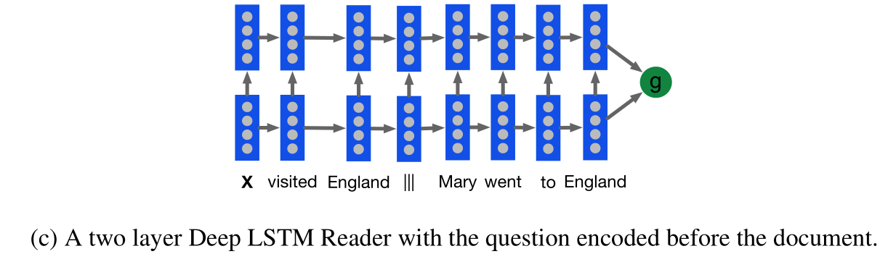
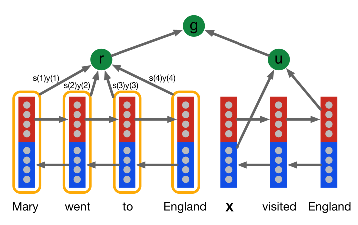
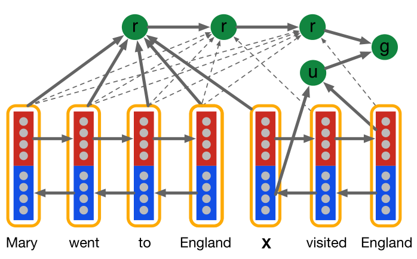

1. Models
So far we have motivated the need for better datasets and tasks to evaluate the capabilities of machine reading models.
[success]
motivated：激发
目标：better datasets and tasks
We proceed by describing a number of baselines, benchmarks and new models to evaluate against this paradigm. We define two simple baselines, the majority baseline (maximum frequency) picks the entity most frequently observed in the context document, whereas the exclusive majority (exclusive frequency) chooses the entity most frequently observed in the context but not observed in the query. The idea behind this exclusion is that the placeholder is unlikely to be mentioned twice in a single Cloze form query.
[success]
baseline 1：maximum frequency，选择文本中频率最高的entity
baseline 2：exclusive frequency，选择文本中频率最高且没有在query中出现的entity
1.1. Symbolic Matching Models
Traditionally, a pipeline of NLP models has been used for attempting question answering, that is models that make heavy use of linguistic annotation, structured world knowledge and semantic parsing and similar NLP pipeline outputs.
[success]
annotation：注释
传统方法所依据的东西：linguistic annotation, structured world knowledge and semantic parsing
Building on these approaches, we define a number of NLP-centric models for our machine reading task.
Frame-Semantic Parsing Frame-semantic parsing attempts to identify predicates and their arguments, allowing models access to information about “who did what to whom”.
[success]
predicate：述语，谓语
argument：论点
框架语言分析的目标：提取出“who did what to whom”
Naturally this kind of annotation lends itself to being exploited for question answering. We develop a benchmark that makes use of frame-semantic annotations which we obtained by parsing our model with a state-of-the-art frame-semantic parser [13, 14].
[success] 使用state-of-the-art frame-semantic parser作为benchmark
As the parser makes extensive use of linguistic information we run these benchmarks on the unanonymised version of our corpora. There is no significant advantage in this as the frame-semantic approach used here does not possess the capability to generalise through a language model beyond exploiting one during the parsing phase. Thus, the key objective of evaluating machine comprehension abilities is maintained.
[success]
这个benchmark要求使用原始数据，而不是2.1中提供的anonymised数据。
但是由于benchmark不能“generalise through a language model”，让benchmark使用原始数据不影响比较的公平性。
Extracting entity-predicate triples—denoted as (e 1 ,V,e 2 )—from both the query q and context document d, we attempt to resolve queries using a number of rules with an increasing recall/precision trade-off as follows (Table 4).
[success]
benchmark具体做的事情：
（1）从问题中提取三元组(p, V, y)
（2）从文本中提取三元组(x, V, y)
（3）x是p的候选答案，基于策略选择合适的x
（4）recall/precision trade-off
For reasons of clarity, we pretend that all PropBank triples are of the form (e 1 ,V,e 2 ). In practice, we take the argument numberings of the parser into account and only compare like with like, except in cases such as the permuted frame rule, where ordering is relaxed. In the case of multiple possible answers from a single rule, we randomly choose one.
[warning] 这一段没看懂
Word Distance Benchmark We consider another baseline that relies on word distance measurements. Here, we align the placeholder of the Cloze form question with each possible entity in the context document and calculate a distance measure between the question and the context around the aligned entity. This score is calculated by summing the distances of every word in q to their nearest aligned word in d, where alignment is defined by matching words either directly or as aligned by the coreference system. We tune the maximum penalty per word (m = 8) on the validation data.
[success]
for each entity：
（1）把entity代入cloze中
（2）计算文本中entity的附近单词和问题中entity的附近单词的距离
[?]distance怎么算没看懂
1.2. Neural Network Models
Neural networks have successfully been applied to a range of tasks in NLP. This includes classification tasks such as sentiment analysis [15] or POS tagging [16], as well as generative problems such as language modelling or machine translation [17].
[info] sentiment：情感
We propose three neural models for estimating the probability of word type a from document d answering query q:
where V is the vocabulary 4 , and W(a) indexes row a of weight matrix W and through a slight abuse of notation word types double as indexes. Note that we do not privilege entities or variables, the model must learn to differentiate these in the input sequence. The function g(d,q) returns a vector embedding of a document and query pair.
[success]
这个公式不是太懂，可能意思是：
g是vector embedding，代表文本和问题之间的联系点
W是权重矩阵，代表某个单词在这些联系点上的权重。
The Deep LSTM Reader Long short-term memory (LSTM, [18]) networks have recently seen considerable success in tasks such as machine translation and language modelling [17]. When used for translation, Deep LSTMs [19] have shown a remarkable ability to embed long sequences into a vector representation which contains enough information to generate a full translation in another language.
[success] Deep LSTM的特点：
（1）embed long sequences into a vector
（2）包含原序列的信息
（3）用另一种形式表达信息
Our first neural model for reading comprehension tests the ability of Deep LSTM encoders to handle significantly longer sequences. We feed our documents one word at a time into a Deep LSTM encoder, after a delimiter we then also feed the query into the encoder.
[info] delimiter：划界符
Alternatively we also experiment with processing the query then the document.

[success]
把Deep LSTM当作一个encoder来用。
输入可以是“文本+问题”或“问题+文本”。
The result is that this model processes each document query pair as a single long sequence. Given the embedded document and query the network predicts which token in the document answers the query. We employ a Deep LSTM cell with skip connections from each input x(t) to every hidden layer, and from every hidden layer to the output y(t):
[warning] [?] skip connections?
确实没有hidden layer到y的输出，但是x到hidden layer的输出还是有的呀？
where || indicates vector concatenation h(t,k) is the hidden state for layer k at time t, and i, f, o are the input, forget, and output gates respectively. Thus our Deep LSTM Reader is defined by g LSTM (d,q) = y(|d|+|q|) with input x(t) the concatenation of d and q separated by the delimiter |||.
The Attentive Reader
[info] attentive：专心的
The Deep LSTM Reader must propagate dependencies over long distances in order to connect queries to their answers. The fixed width hidden vector forms a bottleneck for this information flow that we propose to circumvent using an attention mechanism inspired by recent results in translation and image recognition [6, 7].
[success]
circumvent：绕开
"The Deep LSTM Reader"的缺点：
[?] fixed width hidden vector是瓶颈
解决方法：
注意力机制
This attention model first encodes the document and the query using separate bidirectional single layer LSTMs [19].
We denote the outputs of the forward and backward LSTMs as and respectively.

[success]
denote：标记
代表正向LSTM的向量， 代表反向LSTM的向量。
第一步：对文本和问题分别求双向LSTM
第二步：对问题求u
第三步：“基于问题u”，对文本求r
第四步：基于问题u和文本r，求结果g
The encoding u of a query of length |q| is formed by the concatenation of the final forward and backward outputs, 。
[success]
问题向量u只是双向LSTM的简单拼接
For the document the composite output for each token at position t is, . The representation r of the document d is formed by a weighted sum of these output vectors. These weights are interpreted as the degree to which the network attends to a particular token in the document when answering the query:
[success]
文本向量是各个单词的weighted sum，问题向量和文本向量的计算方式不同。
权重的大小与特定的问题有关，因此u是计算r的参数。
[?]公式上可以看出u对r有影响，图上没有看出这层关系。
where we are interpreting y d as a matrix with each column being the composite representation y d (t) of document token t. The variable s(t) is the normalised attention at token t. Given this attention score the embedding of the document r is computed as the weighted sum of the token embeddings.
The model is completed with the definition of the joint document and query embedding via a non-linear combination:
The Attentive Reader can be viewed as a generalisation of the application of Memory Networks to question answering [3].
[info] generalisation：概括、归纳
That model employs an attention mechanism at the sentence level where each sentence is represented by a bag of embeddings. The Attentive Reader employs a finer grained token level attention mechanism where the tokens are embedded given their entire future and past context in the input document.
[success]
Memory Network：句子级别的注意力机制
Attentive Reader：a finer grained token level的注意力机制
The Impatient Reader The Attentive Reader is able to focus on the passages of a context document that are most likely to inform the answer to the query. We can go further by equipping the model with the ability to reread from the document as each query token is read. At each token i of the query q the model computes a document representation vector r(i) using the bidirectional embedding :
The result is an attention mechanism that allows the model to recurrently accumulate information from the document as it sees each query token, ultimately outputting a final joint document query representation for the answer prediction,

[success]
问题的每一个token生成一个r